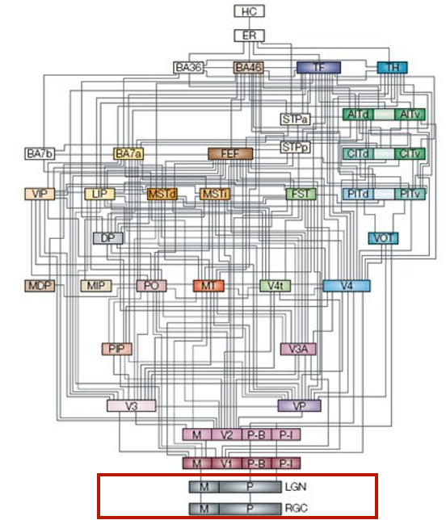
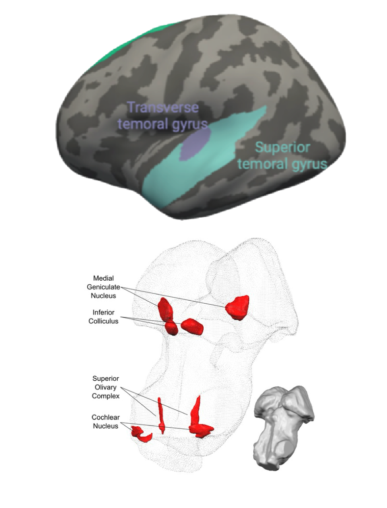
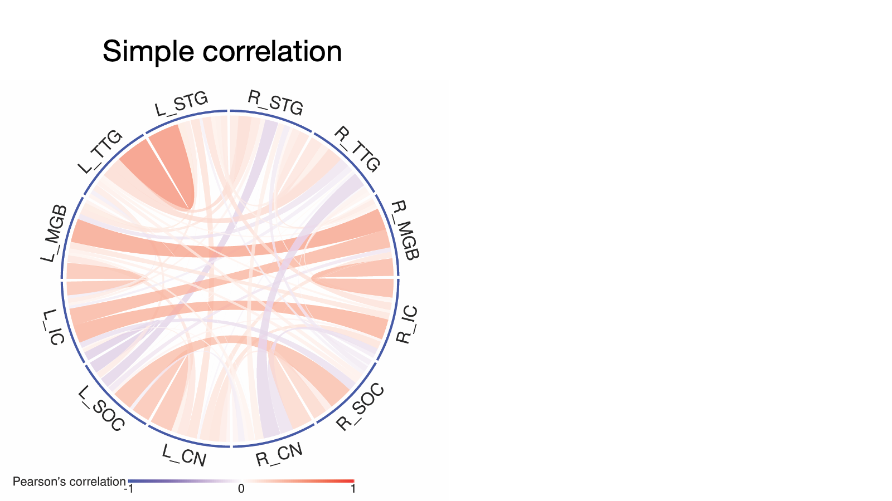
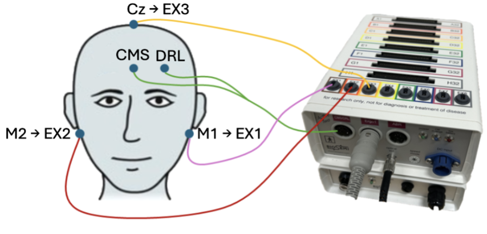
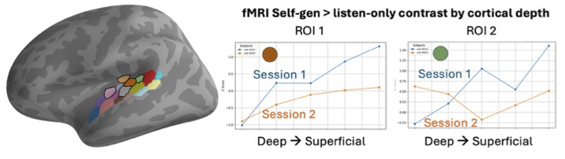
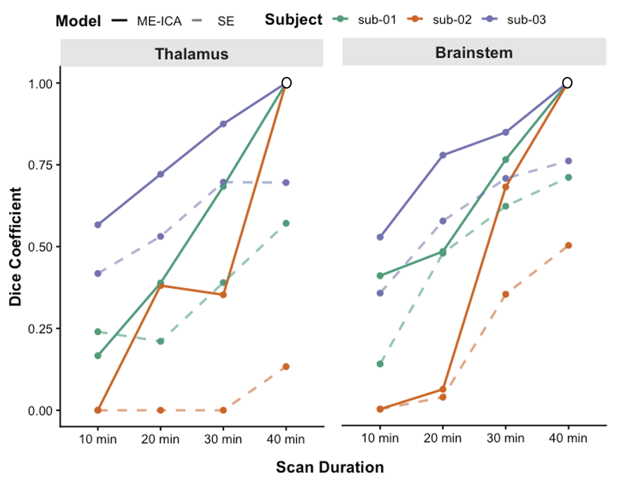
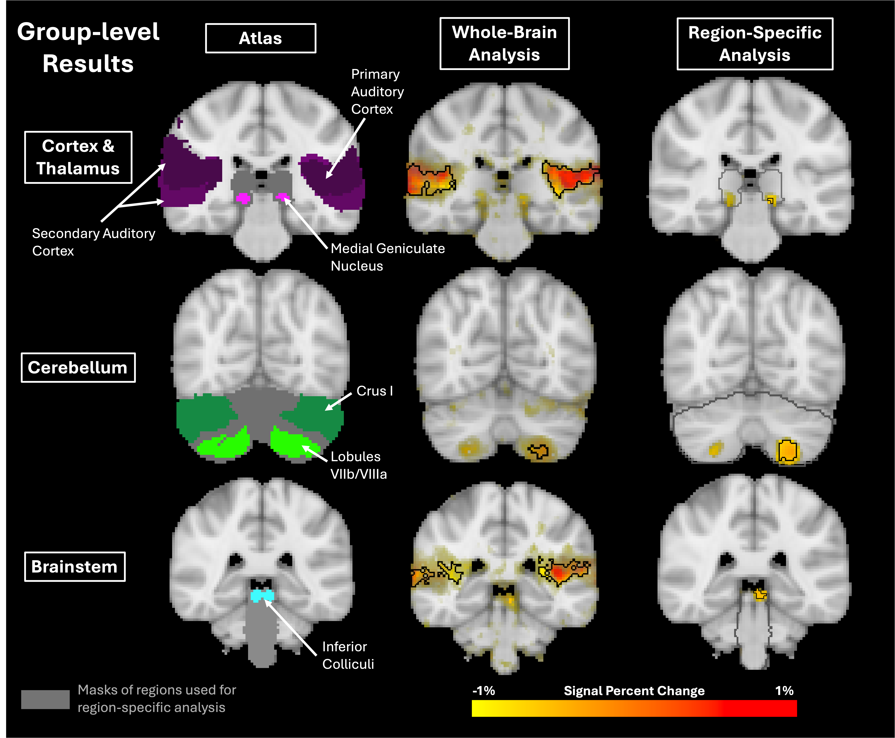
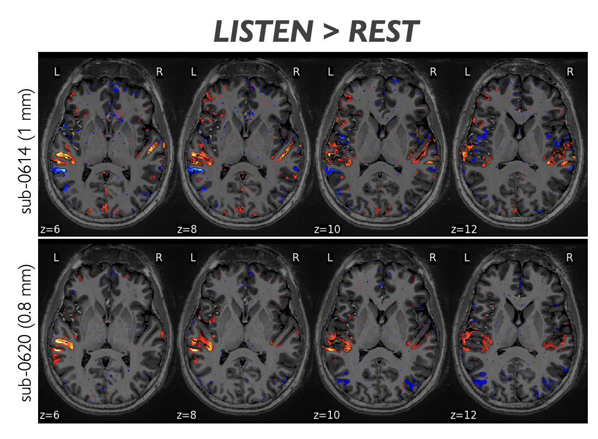

Imaging the neural systems underlying human communication
2025-01-22
A systems-level approach to human speech neuroscience

A systems-level approach to human speech neuroscience

A systems-level approach to human speech neuroscience

Brain imaging research assistant at UCSF/San Francisco VA Medical Center

PhD in Speech and Hearing Bioscience and Technology at Harvard/MIT

Postdoctoral research in Neuroscience at Baylor College of Medicine

Now: Research Assistant Professor at Northwestern University

Widening perspectives and expanding opportunities through teaching and mentorship

What’s special about the auditory system?


What’s special about the auditory system?


The human subcortical auditory system


But: small, deep brain structures are challenging to image.
Post mortem anatomical localization


3D subcortical atlases


In vivo functional MRI mapping
7 Tesla functional MRI (1.1 mm voxels)
- 168 natural sounds (1 s each): speech, voice, nature, tools, music, animals and monkey calls
- Sound > baseline contrast
- 10 healthy participants
- 2 hours per session
- Collected over 2 sessions

Where are the auditory structures: Three public atlases

How are the auditory structures connected anatomically?
Post mortem
In vivo
How are the auditory structures connected functionally?
Extracting the pathway (partial correlations) from the network (simple correlations)


7T Human Connectome Project (106 participants) resting state functional MRI

How are the auditory structures connected functionally?
Extracting the pathway (partial correlations) from the network (simple correlations)

7T Human Connectome Project (106 participants) resting state functional MRI
How do we learn new sensory categories?
- Dorsal striatum contribute to learning new categories thanks to its many-to-one projections from distributed cortical networks that subserve:
- motor planning
- task-relevant sensory processing
- feedback processing
- decision-making
- Dorsal striatum involved in auditory category learning tasks using fMRI (Feng et al., 2019; Lim et al., 2019; Yi et al., 2016)
- What anatomical pathways that connect the human auditory system to the striatum?
- How do subdivisions of dorsal striatum functionally contribute to category learning?

Auditory-striatal pathways in non-human primates

Auditory-striatal pathways in the human brain

Similar connectivity patterns in humans and macaques

Human speech and auditory feedback processing
Suppressed cortical response to own voice while speaking (Houde & Jordan 2002)

Less suppression when our own speech is variable (Sitek et al. 2013)

Where are motor signals integrated? Subcortically?

- If integration is subcortical:
- Expect to see FFR differences between self-generated and passive sound
- Recorded FFRs to /da/ stimulus
- Active condition: press a button to generate a sound
- Passive condion: passive presentation of the sound
- Collected data from 33 normal-hearing adults


Active and passive evoked responses
Brainstem frequency-following response

Cortical evoked response

Where are motor signals integrated? Subcortically?
Brainstem frequency-following response (FFR) shows the same sound encoding when a sound is self-generated or passively presented
- No brainstem FFR differences, despite cortical evoked response differences
- Motor signals unlikely to attenuate earliest central auditory signals
- Next steps:
- Source localization of FFR generators (ECR R21 project)
- Cortical layer-specific feedback localization with 7T fMRI (planned R01)
Future research directions

Sensory and motor speech learning: Shared striatal mechanisms?
- Dorsal striatum (caudate and putamen) is critical to auditory learning (Sitek et al., in revision) and motor learning
- Are the neural implementations shared across perceptual and motor learning in the context of speech and language?
- How are shared mechanisms affected in stuttering, dyslexia, or Parkinson’s, and can they inform therapeutic opportunities?
Hearing our own speech: Where are motor signals integrated in auditory cortex?
- Auditory cortex is a hub for motor integration
- But fMRI has shown increased BOLD to self-generated sounds, vs. suppressed M/EEG
- Are different laminar responses the explanation?
We can look at intra-cortical circuits with ultra-high field 7T fMRI


Hearing our own speech: Where are motor signals integrated in auditory cortex?
- Auditory cortex is a hub for motor integration
- But fMRI has shown increased BOLD to self-generated sounds, vs. suppressed M/EEG
- Are different laminar responses the explanation?
We can look at intra-cortical circuits with ultra-high field 7T fMRI
- Cortical depth profile differences during self-generated vs. passive sound listening
- Higher increases at superficial cortical depths, suggesting increased corticocortical feedback
- Future work: Pinpointing feedback dysfunction in stuttering, schizophrenia, and other feedback processing disorders

Improving clinical translation at 3T with multi-echo fMRI

Multi-echo fMRI improves subcortical (and cortical!) fMRI sensitivity
- Typical fMRI uses one readout (“echo”)
- But optimal echo time (TE) isn’t consistent across the brain
- Multi-echo fMRI allows optimal combination of different TEs across the brain
Listening task in 3T fMRI
- 14 participants
- 10 minutes of pop-song listening
- 3 participants returned for precision-mapping session
- Multi-echo fMRI acquisition from UMinn CMRR

Improved precision mapping with multi-echo fMRI
Multi-echo requires less scan time to identify auditory brainstem

Subcortical activations are stronger with multi-echo than single-echo fMRI

A systems-level approach to human speech neuroscience
Acknowledgments
SoundBrain Lab
- Bharath Chandrasekaran, Jacie McHaney, Kailyn McFarlane
- Nike Gnanateja (now UW Madison CSD)
- Casey Roark (now U New Hampshire Psychology)

Northwestern: Molly Bright, Michelle Medina (BME PhD student), Gabby Butler (Cog Sci UG honors student), Max Chen (Cog Sci/Comp Sci undergrad)
UT Austin collaborators: Abhra Sarkar, Noirrit Chandra (UT Dallas), Blake Moya (industry)
Pitt: Jay Bohland, Mandy Hampton Wray
Harvard/MIT: Satra Ghosh (PhD advisor)
Active funding and support
- K01 DC019421 (2023–2027)
- R21 DC022906 (2025–2028)
- R01 DC020963 (2024–2027; PI: Bohland)
How is the brainstem supplied oxygen?


Finger motor representation in the human brain


Posterior mean dominance greater than 25% across voxels for the right index (red), left index (blue), and middle fingers (green).

The developing auditory system: Speech-in-quiet vs. baseline fMRI contrast

The developing auditory system: Speech-in-quiet vs. -6 dB SNR

Systems for speech-in-noise processing are actively developing in adolescents
- Children activate broad canonical auditory and language regions more strongly in clear speech compared to noisy stimuli
- No evidence that they utilize compensatory motor and prefrontal regions seen in adults
- Investigating task-relevant representations in development
- Currently collecting data in children who stutter
Multi-echo fMRI improves group-level sensitivity at 3T

Greater self-generated vs. passive fMRI responses in a single participant across replications


Stronger self-generated (vs. passive) sound responses in superficial auditory cortex